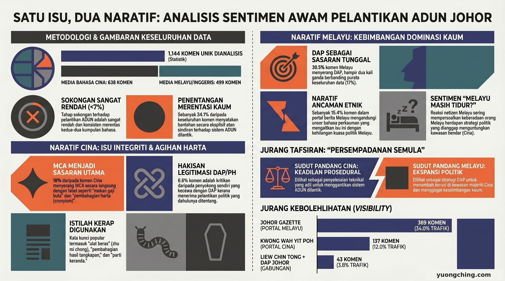

Apabila Dewan Undangan Negeri Johor meluluskan pindaan perlembagaan pada 7 Mei 2026 — menambah 5 ADUN dilantik secara rasmi — perdebatan politik masih berlangsung. Tetapi di ruangan komen Facebook, sesuatu keputusan sudah pun dibuat. Dan komuniti Cina dan Melayu telah membuat keputusan yang hampir berbeza sepenuhnya mengenai isu yang sama.
Data

Analisis ini menggunakan 33 siaran awam Facebook yang diterbitkan semasa perdebatan pindaan perlembagaan Johor (4–7 Mei 2026). Selepas penyahduplikatan merentasi dua set data mentah, sampel terdiri daripada 1,144 komen bebas — 638 dalam bahasa Cina dan 499 dalam bahasa Melayu/Inggeris. Sumber merangkumi media Mandarin, halaman maklumat bahasa Melayu (Johor Gazette, MyJohor), dan akaun peribadi wakil rakyat DAP dan PKR.
Sokongan terhadap dasar ADUN dilantik tidak melebihi 7% dalam kedua-dua komuniti — satu-satunya titik persetujuan yang jelas. Tetapi siapa yang mereka tentang, dan apa yang mereka tentang, membawa mereka ke medan pertempuran yang sama sekali berbeza.
Ruangan komen Cina: MCA sasarannya, bukan sistem
Dalam 638 komen Cina, naratif dominan bukan tentang sistem ADUN dilantik itu sendiri. 16% komen menyerang MCA secara langsung — terutama Ketua Pemuda MCA Lim Thian Soon. "Big-mouth Soon", "crybaby Soon", "anjing suruhan", dan "bahagi rampasan" adalah kata-kata berulang. Dalam satu siaran Guangming Daily dengan 137 komen, 23.4% menyerang MCA dan 19% menggunakan rangka "rasuah/kronisme".
Kritikan terhadap DAP juga wujud — tetapi bukan dari kem pembangkang. Ia datang dari dalam pangkalan Pakatan Harapan sendiri:
Ruangan komen Melayu: isu ADUN dilantik hilang, DAP jadi medan pertempuran
Komen bahasa Melayu menunjukkan ekosistem politik yang berbeza sepenuhnya. 30.5% komen Melayu menyerang DAP — hampir dua kali ganda angka keseluruhan 17%. Dalam satu siaran Johor Gazette (389 komen Melayu), kadar serangan DAP mencapai 37.5%, dengan 15.4% komen mengandungi bahasa perkauman.
Kandungan asal siaran ini adalah laporan mengenai pendirian Liew Chin Tong — mencadangkan persempadanan semula sebagai alternatif kepada ADUN dilantik.
Satu cadangan, dua penerimaan yang berbeza
| Framing | Penerimaan komuniti Cina | Penerimaan komuniti Melayu |
|---|---|---|
| "Persempadanan semula" sebagai alternatif | Keadilan prosedur — teknikal, dinyahpolitikkan | Pengembangan penguasaan politik Cina — perkauman, mengancam |
| Sasaran kritikan utama | MCA (Lim Thian Soon khususnya) | DAP (framing perkauman) |
| Hakisan legitimasi dalaman | 6.6% — hakisan legitimasi PH | Minimum |
| Bahasa perkauman | Jarang | 15.4% (siaran Johor Gazette) |
Penemuan utama: Kedua-dua komuniti menentang dasar ADUN dilantik — tetapi mereka bertempur di medan yang sama sekali berbeza. Ketegangan teras dalam data ini bukan pada intensiti emosi, tetapi pada hakikat bahawa cadangan yang sama menghasilkan kesan penerimaan yang bertentangan sepenuhnya dalam dua komuniti bahasa. "Persempadanan semula" sebagai alternatif diterima sebagai keadilan prosedur dalam rangkaian Cina, dan sebagai pelan pengembangan perkauman dalam rangkaian Melayu. Jurang ini bukan dicipta oleh mana-mana pihak. Tetapi ia nyata, dan ia meninggalkan kesan data yang jelas dalam ruangan komen.
Nota metodologi
Analisis ini berdasarkan 1,144 komen bebas selepas penyahduplikatan merentasi fail. Pengkelasan sentimen dan tematik menggunakan kaedah anotasi peraturan kata kunci dengan pengesahan pensampelan manual (minimum 30 setiap kategori). 59.8% komen tidak diklasifikasikan secara eksplisit. Facebook adalah platform di mana pengguna yang lebih bersuara dan aktif lebih terwakili.